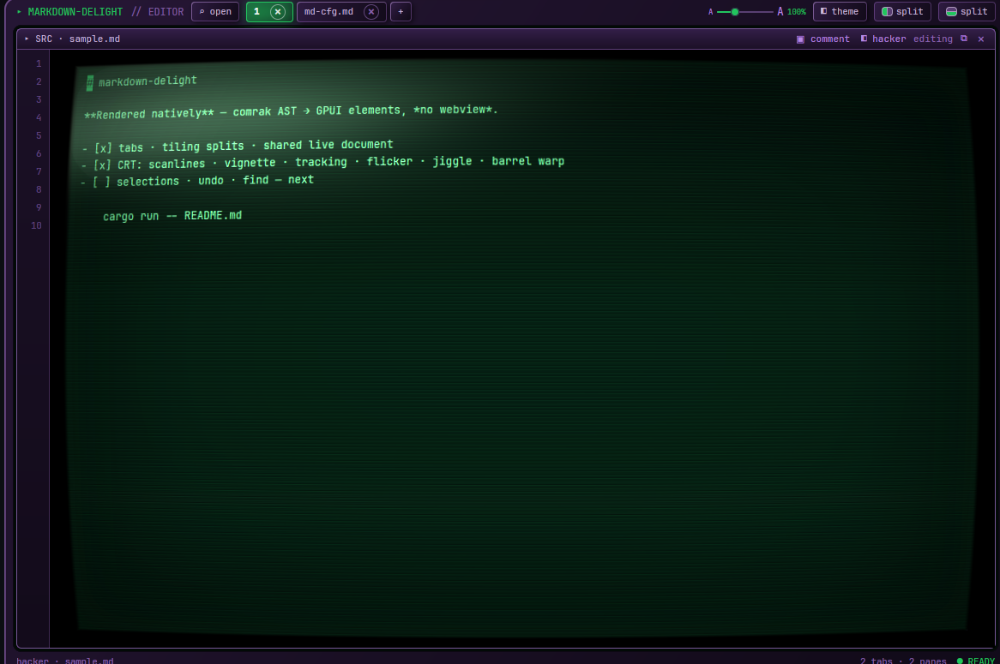
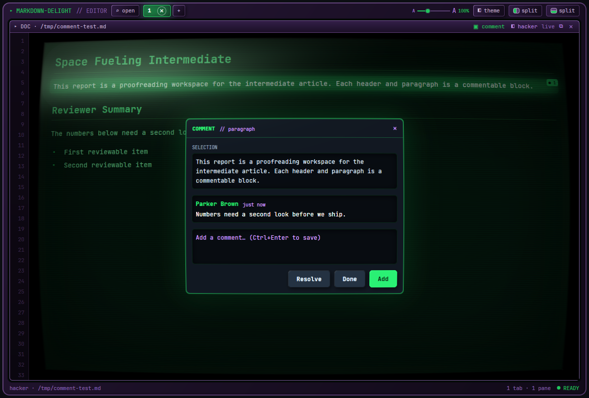
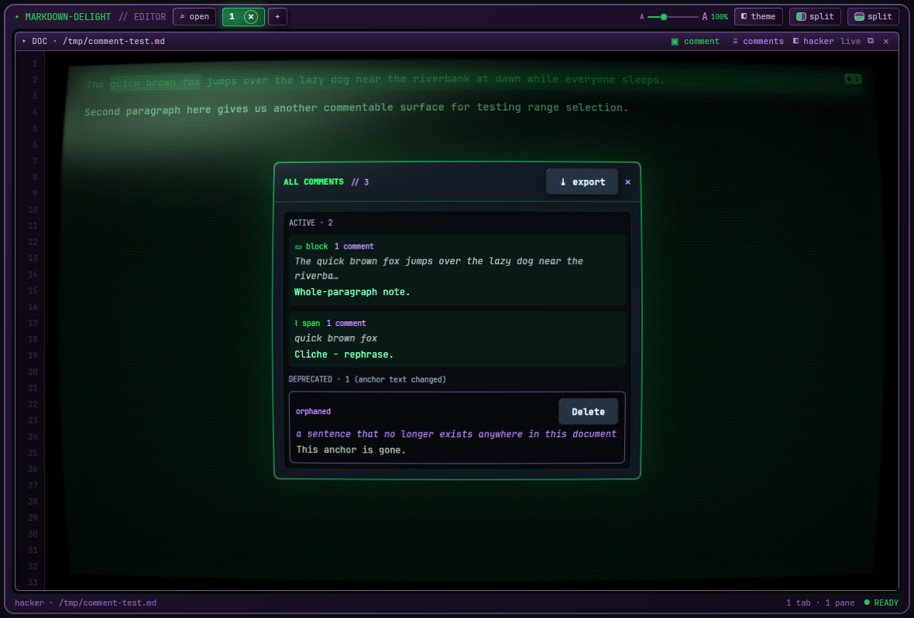
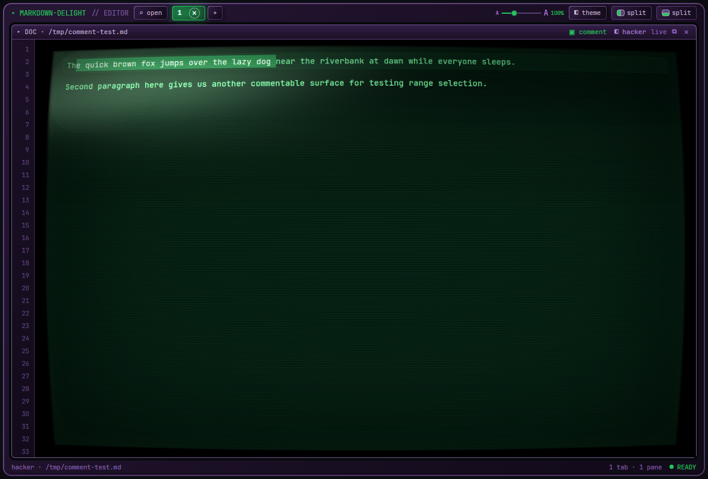
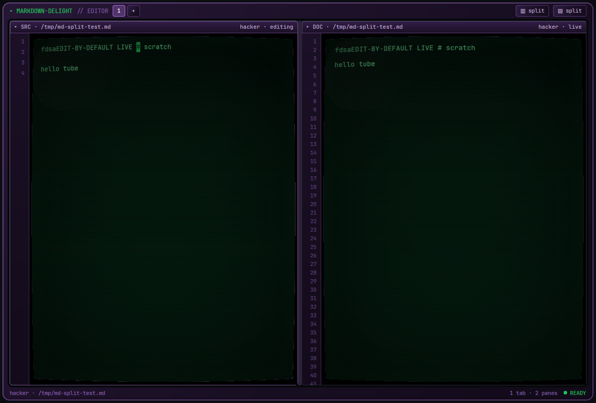
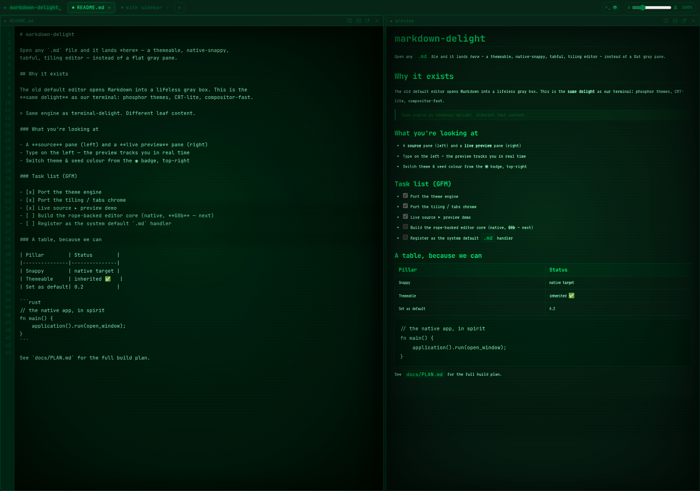
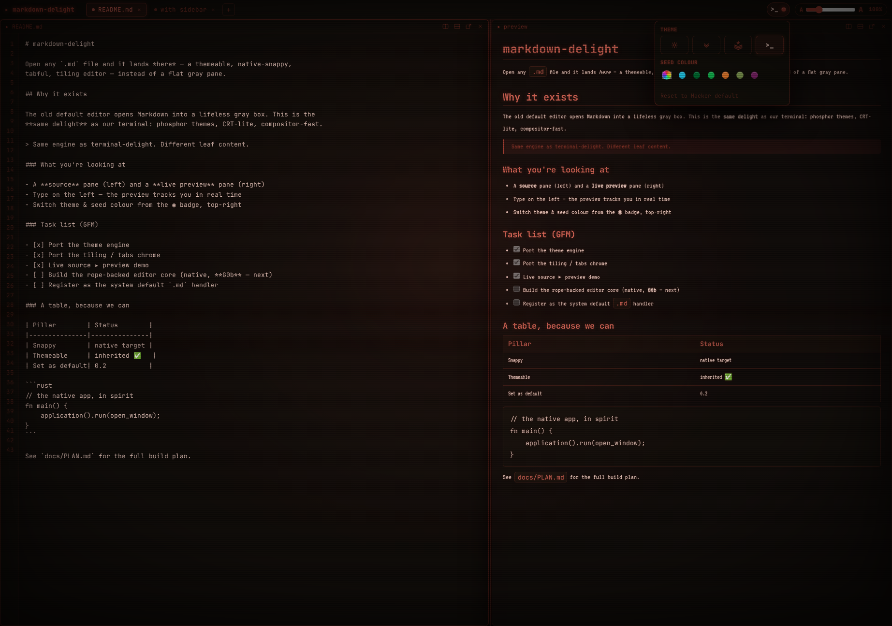

A tabful, tiling Linux Markdown editor that opens any .md into a gorgeous, themeable, native-snappy surface — not a flat gray pane.
Rust end-to-end: gpui renders every pixel on the GPU and comrak turns CommonMark+GFM into native elements — no webview. Live source ▸ preview, a Google-Docs-style comment mode, tiling multi-pane with per-pane themes, and a real CRT barrel warp. Set it as your system default .md handler.

Most Markdown apps pick one: a code editor that shows raw text, or a viewer that renders it behind a webview. markdown-delight does both natively — edit on the left, watch comrak render to real GPU elements on the right, live. The CRT look (scanlines, glow, a genuine per-pane barrel warp) is data, not chrome: themes are TOML files you edit while the app runs, no recompile. And because it's a real .md handler, double-clicking a Markdown file finally opens something worth looking at.
A per-pane, Google-Docs-style review surface. Click a block or drag-select a span; a solid "device" panel flies out to leave remarks. Comments live in ~/.config, never beside your .md — so they can't be committed by accident.
comrak parses CommonMark + GFM (tables, task lists, strikethrough, autolinks) into GPUI elements — headings, code blocks, quotes, lists. No webview, no Electron.
Edit in a rope-backed source pane; every preview pane of the same doc re-renders as you type. Ctrl+E flips a pane between source and rendered.
Tiling-tree splits that divide only the focused pane, tabs, sub-tab drag-to-split/move, window pop-out, scratch notebooks, and session restore.
Rope buffer with full text selection — Shift+Arrows/Home/End, word & document motion, select-all, system clipboard, word-delete, shift-click.
Four built-ins plus a seed-colour wheel, read from ~/.config/markdown-delight/theme.toml and reloaded on save — per-pane, no restart.






markdown-delight renders on the GPU through gpui/wgpu — it isn't a webpage and a browser shell wouldn't be the real engine. Download the self-contained MIT AppImage and run the actual app on your Linux box (or build it from source). (There is a zero-build browser design reference — the source ▸ preview prototype that drives the theme tokens and chrome — but the product is native.)
The sibling of terminal-delight, same soul: look gorgeous, run native-snappy, be fully themeable, stay open source. A Markdown surface you reach for because it's delightful — with reviewing that feels like Google Docs, not a diff.
The code and the binary are MIT. We sever the GPL-3.0 crates the Zed/gpui graph would otherwise link (patches/sever-gpl-crates.patch), so the shipped AppImage is self-contained and carries no GPL boundary. It's still clean-room: the editor core is original work on ropey — Zed's GPL editor crate was never used.
It targets the freedesktop Linux desktop (X11 & Wayland) via gpui's wgpu renderer. Not macOS or Windows.
# one-time: the pinned gpui source beside this repo, at the exact pin + our patch git clone https://github.com/zed-industries/zed ../zed-upstream cd ../zed-upstream git checkout abbe85a3321bf6cb7f5b241e623d9c2e16c29187 git apply ../markdown-delight/patches/td-crt-pass.patch cd ../markdown-delight # run it on any Markdown file cd app && cargo run -- ../README.md # become the system default .md handler (+ icon) cargo build --release && ../scripts/make-default.sh
gpui is consumed from a pinned Zed checkout carrying the td-crt-pass renderer patch (the per-pane barrel warp) as a sibling zed-upstream/ directory. Full prerequisites, the system dependencies, and troubleshooting are in BUILDING.md ↗; the contributor bar and clean-room rule are in CONTRIBUTING.md ↗.
Keys: Ctrl+E source↔preview · Ctrl+S save · Ctrl+Shift+C comment mode · Ctrl+Shift+A all comments · Ctrl+Alt+R/Ctrl+Alt+D split · Ctrl+Shift+T new tab.